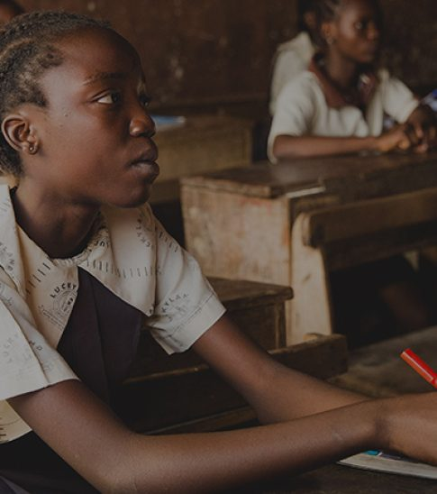
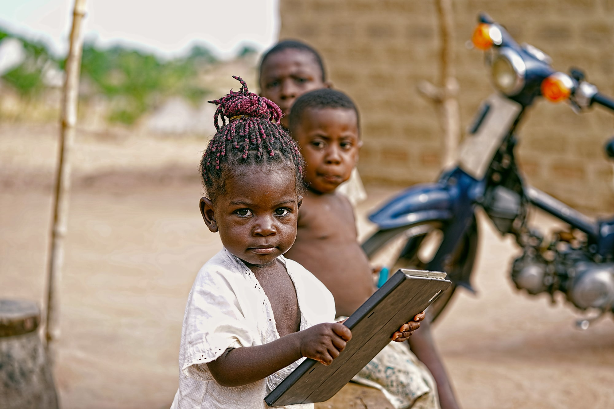
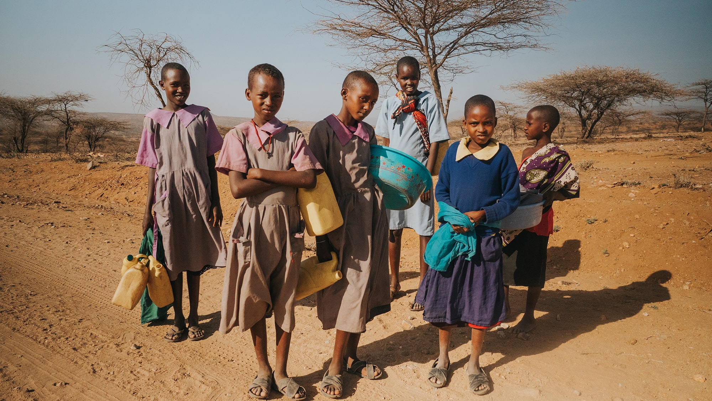
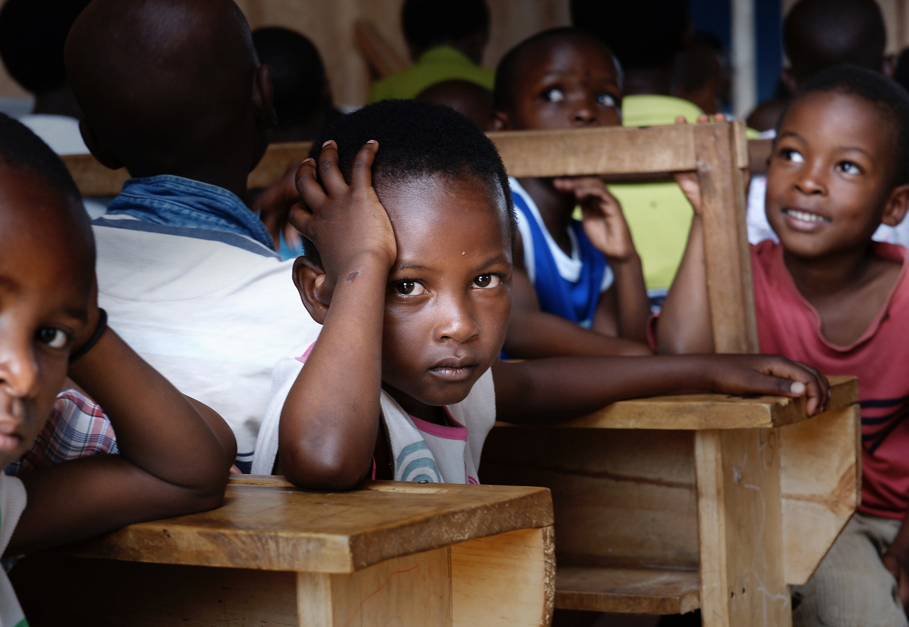
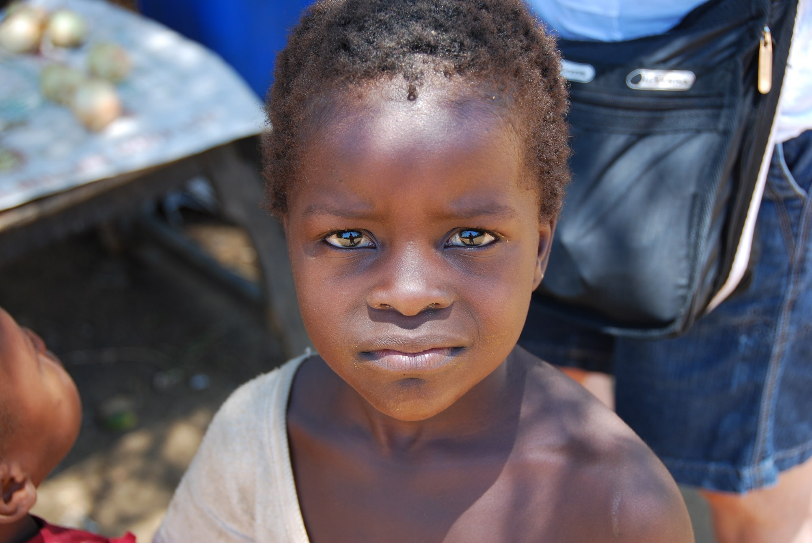
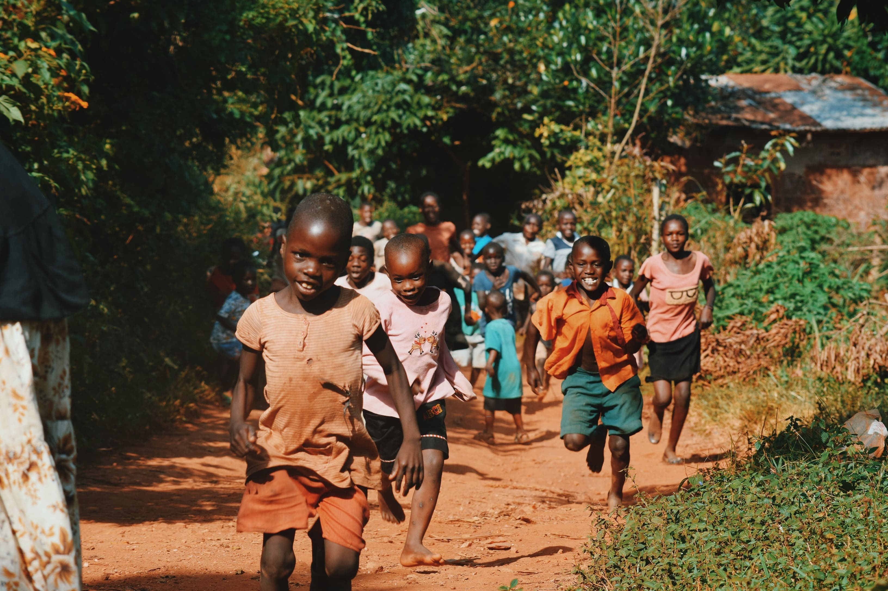
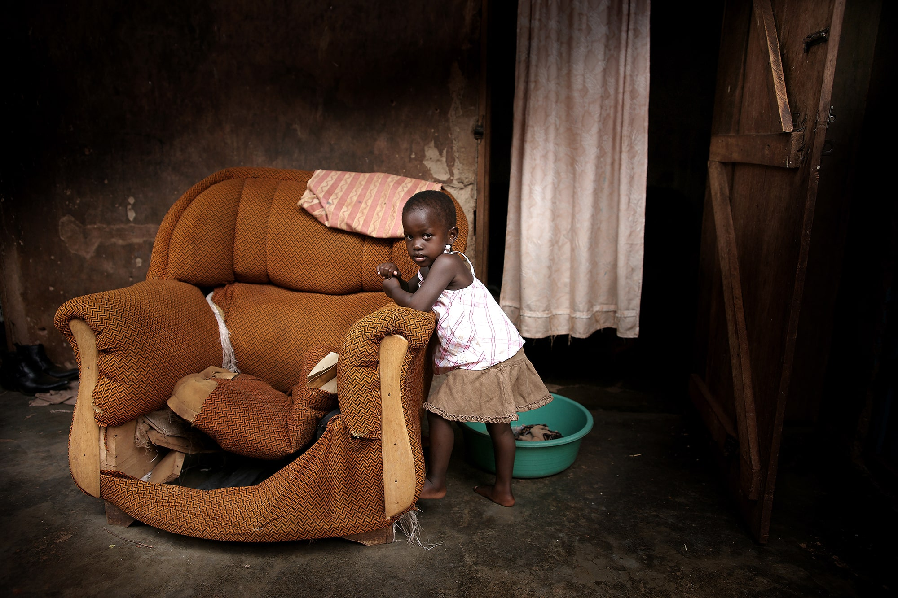

Home / Service projects
There is so much we can learn from each other


Many of our members are on the frontline facing challenges during this pandemic. We have been able to give them a voice and have a forum for them to share their views.
Our virtual round table discussions have been unique because the participants were heroes on the frontline – what they said came from the bottom of their hearts.
This is a voluntary group – we use this to disseminate general information about new information of interest. Members can use the group to exchange ideas.
Selected articles of interest are posted on this site.





Each donations matter, even the smallest ones. Donate $2( average price of coffee in the USA) and someone’s life will get better!